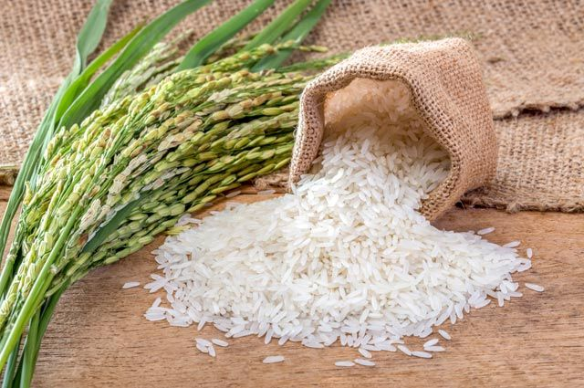

Join to
ONLINE CHATDescription of the site
The website "Cereal Crops in Kazakhstan" is an important online resource, dedicated to the research, cultivation and use of cereals in agriculture Kazakhstan. We strive to become a reliable source of information for agricultural producers, agronomists, students and everyone stakeholders who are interested in this important branch of agriculture. The site was developed with the support of the Kazakh National Agrarian Research University!

Kazakh National Agrarian University - higher education establishment in Almaty. The main goal of a research university is integration science and production, training highly qualified personnel through participation in fundamental and applied scientific research and scientific and technical projects. Training is conducted at the following faculties: agrobiology and phytosanitary; technology and bioresources; veterinary medicine; forestry, land resources and horticulture; hydraulic engineering, land reclamation and business; engineering.
Site Goals
-
Education And informing population
Providing a reliable and up-to-date source of information about cereal crops, their properties, features of cultivation and use in various branches of agriculture.
-
Agricultural support manufacturers
Providing guides, tips and resources for increasing the efficiency of growing cereal crops in Kazakhstan.
-
Promoting industry development
Promoting the dissemination of advanced technologies and practices in growing and using cereal crops to improve quality and yield.
-
Promoting a healthy lifestyle
Popularization of cereals as an important source of food products rich in nutrients that contribute to healthy diets and population well-being.
The target audience
Target group, target audience - a term used in marketing or advertising to designate a group of people united by common characteristics, or united for some purpose or purpose. Under general signs can be understood as any characteristics required by the organizers.
Our site is intended for:
- Agricultural producers who are engaged in growing cereal crops or are interested in this area.
- Agronomists and agricultural specialists who looking for information about modern technologies and growing methods.
- Students and scientists who study cereals and agricultural sciences.
Anyone who is interested in a healthy lifestyle and wants to know more about the benefits of cereals in nutrition and feeding.
Here you can watch a video about cereals in Kazakhstan
You can also watch other videos about plants
Interesting Facts
Here are some interesting facts about grains. For example, did you know that there are thousands of varieties wheat, and their classification is quite complicated, but there are only two main types - hard and soft.
-

Wheat is the first crop that people began to grow artificially. Wheat breeding was first done by the inhabitants of China and Mesopotamia.
-

Barley is considered the fastest ripening grain crop, since its growing season is only 62 days.
-

Cotton absorbs liquid well. Cotton fabric can absorb up to 27 times its weight in liquids, which makes cotton clothing especially comfortable because it absorbs sweat.
-

Rice contains a lot of potassium, which is beneficial for the cardiovascular system. There is also calcium, iodine, iron, zinc, phosphorus. Rice does not contain gluten, a protein that causes an allergic reaction.